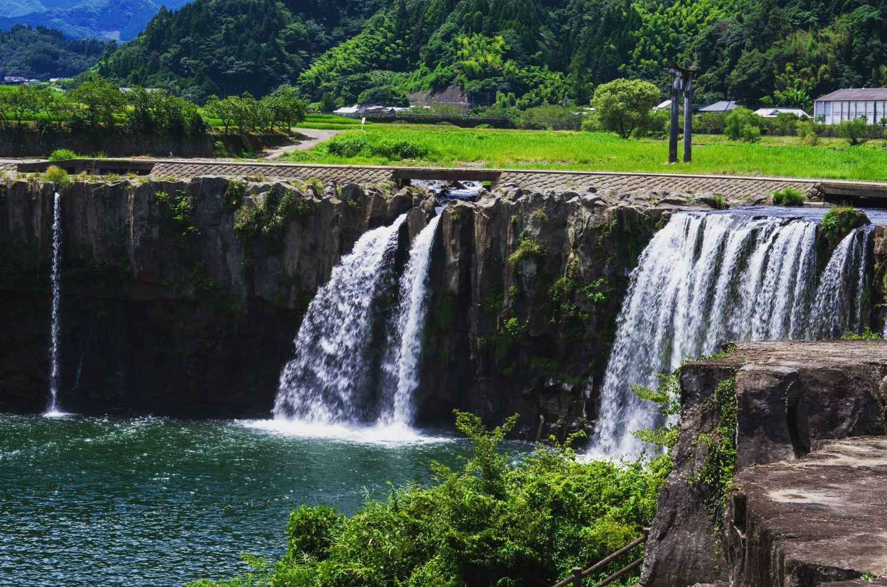
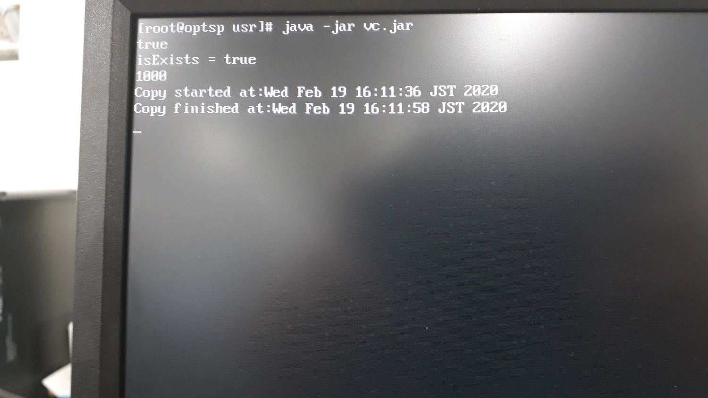
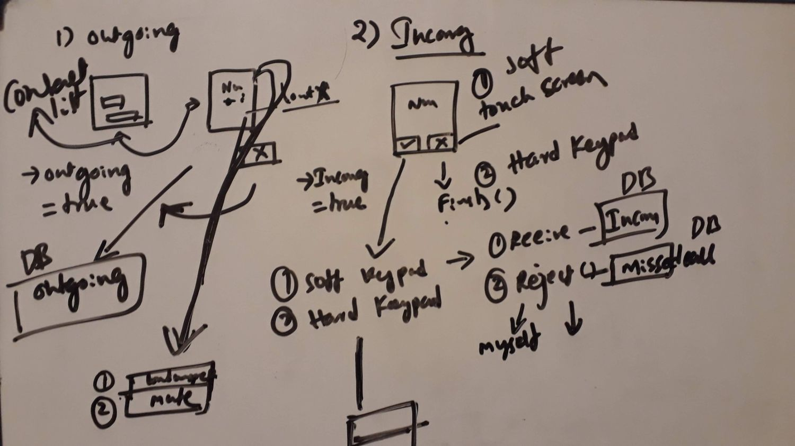
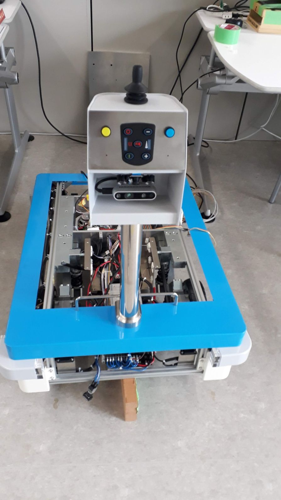
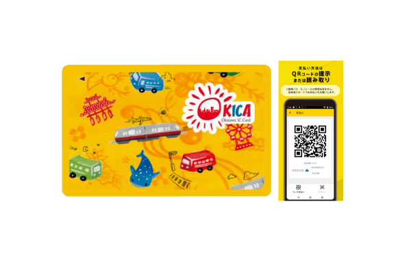
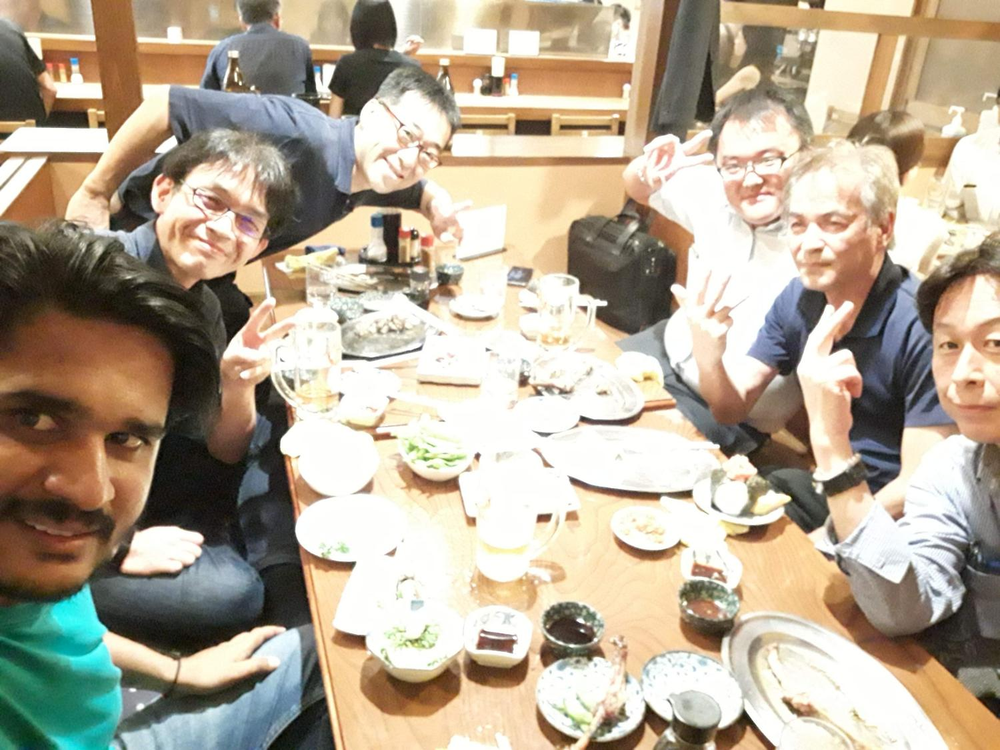
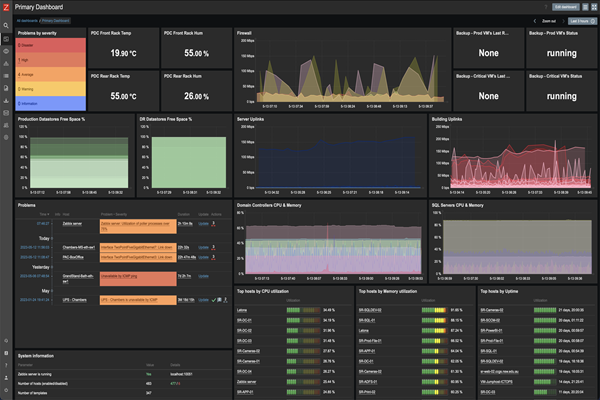
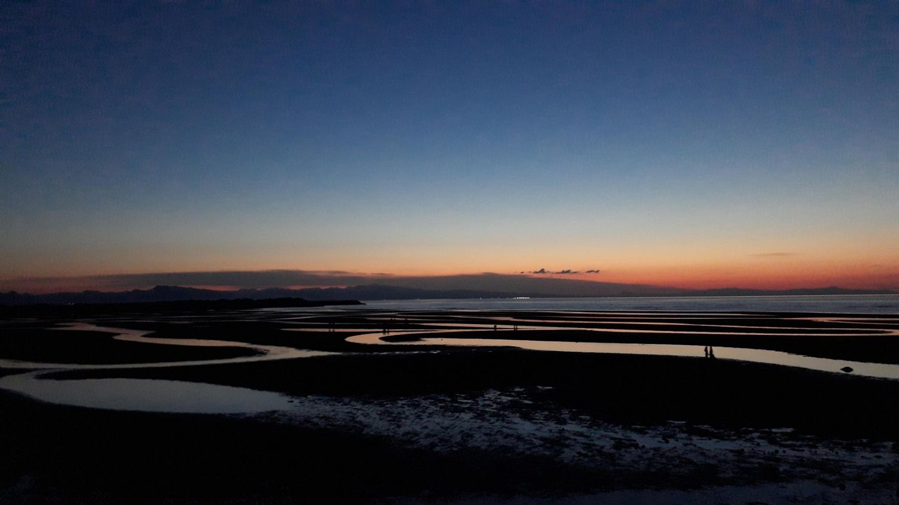
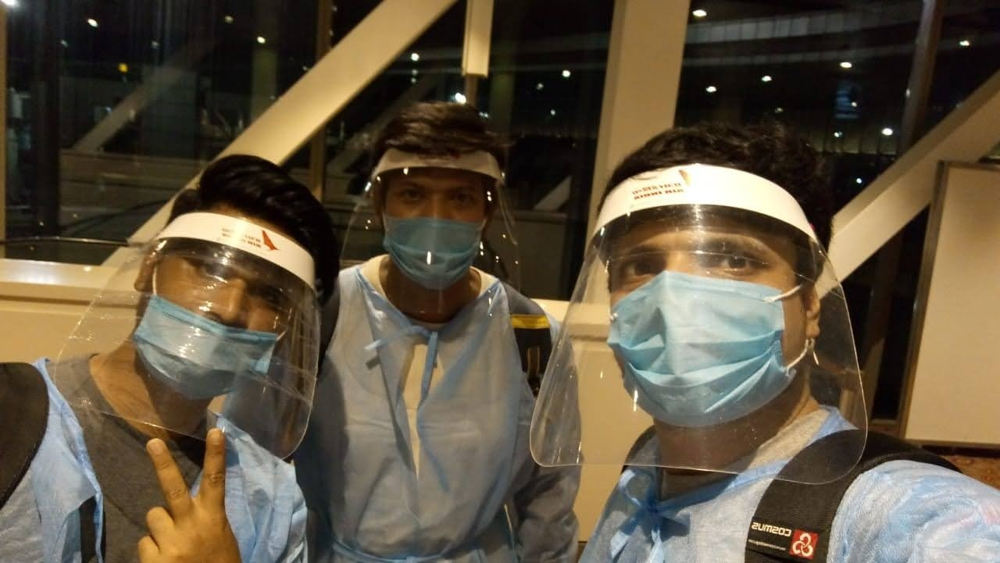

Year Three: New Challenges and Pandemic Pauses

My third year in Japan was supposed to be a smooth ride, but of course, life had other plans. Between postponed Olympics, robot projects, and navigating a world slowly closing down due to the pandemic, this year was nothing short of an adventure. Let's dive in!
My journey has always been the balance between chaos and order.
Chapter 1: Java, Robots, and New Frontiers
It started off simple enough—working on a Java project for OPTSP Tokyo. Just your everyday coding challenges, debugging sessions, and coffee-fueled nights. But as soon as I hit my stride, Japan threw a curveball. The Tokyo Olympics, originally set for 2020, got postponed to 2021. It was a bit of a letdown, as I had been looking forward to the buzz and excitement around the city. Still, life moved on.
Soon after, I switched gears to work on IP phones, which was as thrilling as it sounds—coding to make sure people could still have boring conference calls.
Just when I thought things couldn't get more tech-heavy, I found myself knee-deep in AGV (Automated Guided Vehicle) robot development. That's right, actual robots! The project was exciting, with robots moving around like futuristic minions. My childhood dreams of working with robots had officially come true—well, sort of.
Chapter 2: IC Cards and the Case of the OKICA Mystery
Just when I thought I'd earned a break from tech heroics, I found myself thrown into the world of OKICA IC cards. These nifty little cards are used by Yui Rail and buses all over Okinawa. My mission, should I choose to accept it (and I didn't really have a choice): build a react-based web application to manage all things OKICA.
The fun part? IC cards are basically like the wizards of public transport. They handle payments, access control, and probably, in some hidden code, even time travel. Developing an app that made everything work seamlessly was like trying to get 100 toddlers to sit quietly for storytime—it felt impossible at first, but with enough react hooks, API integrations, and sheer determination, it came together.
Chapter 3: Izakaya and AGV Bonding
With all this high-tech work, you'd think there'd be no time to relax. But Japan knows how to balance work with life, and that's where izakaya came in. After long days of working on the AGV robots, the team and I would unwind at a local izakaya, bonding over beer, grilled food, and terrible puns about robots taking over our jobs. It was a much-needed break from the constant focus on code, wiring, and robot movements.
Chapter 4: A Reporting System and 500 Servers
One day, I found myself staring down at a task that could only be described as next-level nerdy: build a reporting system for 500 AWS cloud servers, monitoring CPU, disk, and memory usage with Zabbix. Sure, 500 servers might sound like a lot, but who’s counting? (Answer: Me, I was counting. A lot.) Armed with Python 3, openpyxl, Zabbix API, and, of course, Selenium—the Swiss Army knife of web automation—I embarked on the greatest digital adventure of my life.
As the reports rolled in (beautifully formatted in Excel, I might add), I couldn't help but feel like a digital superhero…
Chapter 5: Harajiri Falls and Scenic Escapes
Amid the hustle, I made time for some sightseeing, including a visit to Harajiri Falls. Imagine standing before a breathtaking waterfall, the kind of natural beauty that makes you forget about the chaos of work and, for a moment, even the pandemic creeping into the background. Japan's scenic spots are truly a balm for the soul, and Harajiri Falls was no exception. It was one of those rare moments where I could fully unplug and just breathe in the calm.
Chapter 6: The Pandemic Hits—And So Does Reality
As 2020 progressed, so did COVID-19. At first, it felt distant, something happening elsewhere. Then, suddenly, it was everywhere. The streets grew quieter, people masked up, and the world slowed down. The Olympics got postponed, offices shut down, and we all started working from home. Japan, usually so vibrant, felt eerily still.
Chapter 7: The Final Boss Fight - Boarding a Plane During COVID-19
By the time it was clear I needed to return to India, international travel had become a horror story. Navigating through airports felt like being in a dystopian movie—temperature checks, forms to fill, endless lines of masked travelers. Every cough made you paranoid. Planes were barely full, but the anxiety was maxed out. It felt like a race to get home before the world completely shut down.
I returned to India with a head full of memories, new skills, and stories to last a lifetime. From robots and izakayas to waterfalls and COVID chaos, my third year in Japan was a whirlwind of new challenges and pandemic pauses. Looking back, it was a year that tested my resilience, taught me patience, and reminded me that even in the face of uncertainty, life goes on—just maybe with a mask and a lot more hand sanitizer.
And with that, I wrapped up my time in Japan... for now. Who knows what’s next? Maybe a fully functioning AI robot to do my work for me? One can dream.